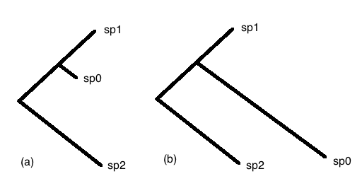
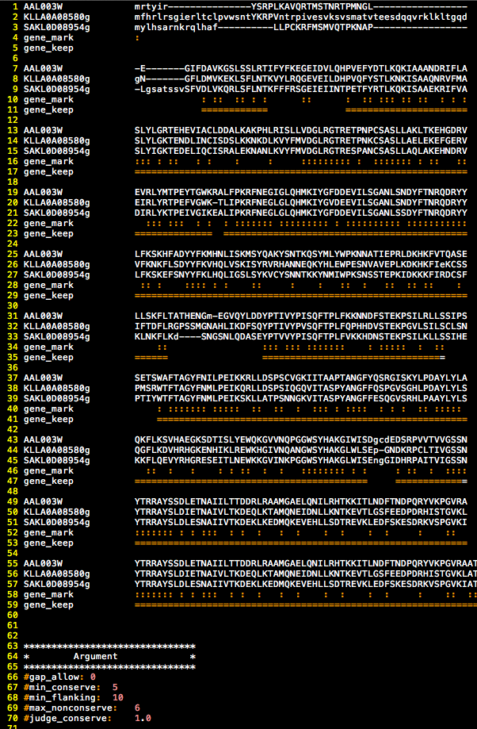

| Project Term: | AftGalLoss |
|---|---|
| Description: | What Happens to yeast Genome after gal-network lost |
| Author: | BingWang |
| Last Modify: | April 21, 2012 |
| Version: | 0.02 |
The ambitious hypothesis is evolution is predictable. Short goal is to see what happens to yeast genome after gal network lost.
In this project, our hypothesis is “After gal net work lost, genes which evolve faster or slower should have something in common”. “common” means share same groups of genes or share same gene ontology terms or even share same gene network topology.
So before we go further, we need to know the “evolve speed”. Here is our solution:
These are two phylogeny trees of two specific genes, in (a)sp0 branch much shorter than sp1 branch, so we assume this gene evolve slower in sp0 than in sp1. While in (b) sp0 evolve faster. So we define evolve speed as log2(sp2/sp1)
First, we need to get some species that lost its gal network.
So in this figure [1] :
The symbol x here means species lost gal network
We have three species that lost gal network. And pick out their three species threes. So we have three trees.
The two C.gla trees are control tree pairs.
The genome data and orthologs files are from Regev’s Fungal Orthogroups v1.1
Tip
Here is a python script to grab the whole genome data and orthologs file(see get-data),which need module mechanize
And we create a pipeline to calculte the speed rate:
Note
code(see cal-speed)
Technical details(You may skip this section)
We use one2one orthologs, that means only those gene pairs appear in both orthologs files (A-B and B-A) and appear only once([A_1,B_1] not [A_1,B_1,B_2]) are considered as one2one orthologs. Others(include [A_1,NONE]) are ignored.
We use dialign-tx do the mutiply alignment. And we have used dialign-t and dialign 2.2, but these two seems have some bugs that several multiply would output nothing while dialign-tx is pretty good. We also use clustal-w It seems not suitable for phylogeny analysis. However, its not easy to get dialign-tx work on 64-bit MacOS, I have changed several int type variable to 64-bit long int, or I won’t pass the compile. On Linux Ubuntu-10.4 system, you can apt-get it, it won’t be a problem. It doesn’t work on Windows unless you use cygwin or other virtual tech.
After alignment, we did refinement, so bad alignment won’t influence our result. We plan to use Gblocks, However, we can’t download it from its’ website (Now it can!). So we refer the original paper [2] [3] and rewrite a simple python version of “Gblocks” code at alnrefine.py. In this program, we judge a conserve site by seeing the percent of the biggest same aligned bases. Default value is 1.0, this means unless all the bases are same, or it is non-conserve site. And we only want those alignment has more than min_conserve conserve site or length bigger than min_flanking and gaps no more than gap_allow and continues non-conserve site no more than max_nonconserve. This is an typical reference output.
4. We use paml do the branch length analysis. Here are the parameters we use.
noisy = 0 * 0,1,2,3,9: how much rubbish on the screen verbose = 1 * 0: concise; 1: detailed, 2: too much runmode = 0 * 0: user tree; 1: semi-automatic; 2: automatic * 3: StepwiseAddition; (4,5):PerturbationNNI; -2: pairwise noise seqtype = 2 * 1:codons; 2:AAs; 3:codons-->AAs aaRatefile = wag.dat * only used for aa seqs with model=empirical(_F) model = 8 * models for AAs or codon-translated AAs: * 0:poisson, 1:proportional, 2:Empirical, 3:Empirical+F * 6:FromCodon, 7:AAClasses, 8:REVaa_0, 9:REVaa(nr=189) Mgene = 0 * AA: 0:rates, 1:separate clock = 0 * 0:no clock, 1:global clock; 2:local clock fix_alpha = 1 * 0: estimate gamma shape parameter; 1: fix it at alpha alpha = 0.0 * initial or fixed alpha, 0:infinity (constant rate) Malpha = 0 * different alphas for genes ncatG = 5 * of categories in dG of NSsites models getSE = 1 * 0: don't want them, 1: want S.E.s of estimates RateAncestor = 0 * (0,1,2): rates (alpha>0) or ancestral states (1 or 2) Small_Diff = 1e-06 cleandata = 1 * remove sites with ambiguity data (1:yes, 0:no)? fix_blength = 0 * 0: ignore, -1: random, 1: initial, 2: fixed method = 1 * 0: simultaneous; 1: one branch at a time5. While calculate the evolve rate, we have a approximately, all branch length equal to 0 will be give a minimal value 0.0001,and evolve rate bigger than 4 will be equals to 4.(4 is quite big for evolve speed, though bigger are amplified by divide a very small number like 0.0001)
it seems in most of the case, sp0 tend to evolve faster than sp1. There are two explanations. 1. These genes are evolve faster because some specific reasons. 2. The species evolve faster and these genes are just a tend representation.
We calculate all gene’s tree and their evolve speed and see whether different liner model can explain the evolve speed difference between sp0(Gal-) and sp1(Gal+), and we get these figures:
This is a typical correction we get. Another “better” out put is:
But is still far from what we expected like the positive control:
We analysis the both tails of the histogram(log2(Sgla/Scer)>2). And We get an enrichment on A.gos’s left tail and right tail. This means A.gos evolve faster in amino acid metabolism and evolve slower in signal transduction .Except this, we get nothing.(I will add figures and tables later...)
We collect a whole genome protein-protein(PP) network. And found a significant lower evolved gene g
##Download whole genomes and orthologs from Regev's orthogroups
import mechanize
from time import sleep
br = mechanize.Browser()
_temp = mechanize.Browser()
##Download aa and nt
br.open('http://www.broadinstitute.org/regev/orthogroups/sources.html')
for l in br.links():
if l.url.startswith("nt") and l.url.endswith(".fasta"):
fasta_file = l.url[l.url.rfind("/")+1:]
sleep(1)
print fasta_file
_temp.open('http://www.broadinstitute.org/regev/orthogroups/aa/'+fasta_file)
f = open("aa/"+fasta_file,"w")
f.write(_temp.response().read())
f.close()
sleep(1)
_temp.open('http://www.broadinstitute.org/regev/orthogroups/nt/'+fasta_file)
f = open("nt/"+fasta_file,"w")
f.write(_temp.response().read())
f.close()
##Download orthologs
br.open('http://www.broadinstitute.org/regev/orthogroups/orthologs.html')
for l in br.links():
if l.url.endswith(".txt"):
ortholog_file = l.url[l.url.rfind("/")+1:].replace("%0A","")
sleep(1)
_temp.open('http://www.broadinstitute.org/regev/orthogroups/orthologs/'+ortholog_file)
f = open("orthologs/"+ortholog_file,"w")
f.write(_temp.response().read())
f.close()
Note
The more elegant code at download_webpage.py
# -*- coding:utf-8 -*-
'''
Author: Bing Wang
Last Modified: 2012.3.18
Version: V0.01
'''
WORKPATH = "/Users/bingwang/VimWork/"
#########################
#######Import#############
import os
import sys
import time
import math
import numpy as np
import matplotlib.mlab as mlab
import matplotlib.pyplot as plt
sys.path.append("/Users/bingwang/VimWork/")
import lib.read.read_orthogroups_tab as orth
import lib.func.alnrefine as alr
import lib.func.paml as paml
####### Class ##########
class Species():
def __init__(self,name):
self.name = name
self.gene = {}
f = open(WORKPATH+'db/'+self.name+"AA.fasta")
for line in f:
line = line.strip()
if line[0] == ">":
name = line[1:]
else:
self.gene[name] = line
f.close()
######## Function ##########
def time_left(percent):
time_used = time.time() - TIME_START
print percent*100,'%'
print "Time used:\t %.2f"%((time_used)/60.),'min'
print "Time left:\t %.2f"%((time_used)*(1-percent)/(60.*percent)),'min'
def check_dir(path):
if not os.path.exists(path):
os.makedirs(path)
return path
def prepare_aln(sp0,sp1,sp2,outdir):
print "************************************"
print "*** Prepare Alignment input Data ***"
print "************************************"
for item in sp0.orth_sp1:
try:
sp0.orth_sp2[item]
try:
sp0.gene[item]
sp1.gene[sp0.orth_sp1[item]]
sp2.gene[sp0.orth_sp2[item]]
write_f_name = item+"_"+sp0.orth_sp1[item]+"_"+ \
sp0.orth_sp2[item]+".fasta"
f = open(outdir+write_f_name,"w")
f.write(">"+item+"\n"+sp0.gene[item]+"\n")
f.write(">"+sp0.orth_sp1[item]+"\n"+sp1.gene[sp0.orth_sp1[item]]+"\n")
f.write(">"+sp0.orth_sp2[item]+"\n"+sp2.gene[sp0.orth_sp2[item]]+"\n")
f.close()
except:
print "WARNING: gene",item,"not write"
continue
except:
pass
def batch_run_dialign(path):
print "************************************"
print "*** Doing Alignment ***"
print "************************************"
fsalist = []
conf = "/Users/bingwang/VimWork/lib/conf/"
dialign = "dialign-tx "
for item in os.listdir(path):
if item[item.rfind(".")+1:] == "fasta":
fsalist.append(item)
total = len(fsalist)
for i,item in enumerate(fsalist):
time_left(i*1.0/total*0.25+TOTAL_PERCENT)
infile = path+item
outfile = path+item[:item.rfind(".")]+".fa"
cmd = dialign+" "+conf+" "+infile+" "+outfile
os.system(cmd)
def batch_refine_aln(path):
print "**************************"
print "*** Refining Alignment ***"
print "**************************"
for item in os.listdir(path):
if item[item.rfind(".")+1:] == "fa":
alr.refine(path + item)
def batch_write_ctl(aa_path,treefile=None):
print "*****************************"
print "*** Writing paml ctl file ***"
print "*****************************"
if treefile == None:
treefile = WORKPATH + "lib/func/3.tree"
for item in os.listdir(aa_path):
if item[item.rfind(".")+1:] == "aa":
paml.write_ctl(aa_path+item,treefile)
def batch_codeml(ctl_path):
print "*********************"
print "*** Runing codeml ***"
print "*********************"
ctllist = []
for item in os.listdir(ctl_path):
if item[item.rfind(".")+1:] == "ctl":
paml.codeml(ctl_path+item)
def batch_read_output(out_path,outfile):
f = open(outfile,"w")
f.write("Sp0\tSp1\tSp2\tsp1+sp0\tsp2+sp0\tsp2+sp1\t\n")
for item in os.listdir(out_path):
if item[item.rfind(".")+1:] == "out":
paml_out = paml.codeml_read(out_path+item)
f.write(paml_out.write_line())
f.close()
def branch_calculte(filename):
f=open(WORKPATH+filename)
f.readline()
paml_rate = {}
for line in f:
line = line.strip()
paml_out = paml.read_line(line)
sp0 = round(((paml_out.sp1_sp0 + paml_out.sp2_sp0) - paml_out.sp2_sp1)/2,4)
sp1 = round(((paml_out.sp2_sp1 + paml_out.sp1_sp0) - paml_out.sp2_sp0)/2,4)
sp2 = round(((paml_out.sp2_sp1 + paml_out.sp2_sp0) - paml_out.sp1_sp0)/2,4)
if math.isnan(sp0) or math.isnan(sp1) or math.isnan(sp2):
pass
else:
sp0 = sp0 if sp0 > 0 else 0.0001
sp1 = sp1 if sp1 > 0 else 0.0001
sp0_devide_sp1 = sp0/sp1
sp0_devide_sp1 = 16 if sp0_devide_sp1 > 16 else sp0_devide_sp1
sp0_devide_sp1 = 0.0625 if sp0_devide_sp1 < 0.0625 else sp0_devide_sp1
paml_rate[paml_out.sp0name]=np.log2(sp0_devide_sp1) #paml-rate structure
'''
f = open(branch_file,"w")
f.write("sp0\tB_sp0\tB_sp1\tB_sp2\n")
for name in paml_rate:
f.write(name+"\t"+str(paml_rate[name][0])+\
"\t"+str(paml_rate[name][1])+\
"\t"+str(paml_rate[name][2])+"\n")
f.close()
'''
return paml_rate
def check_num_of_file(outdir):
count_fasta = 0
count_aa = 0
count_out = 0
for item in os.listdir(outdir):
a = item[item.rfind(".")+1:]
if a == "out":
count_out += 1
elif a == "fasta":
count_fasta += 1
elif a == "aa":
count_aa += 1
if count_out == count_aa and count_aa == count_fasta:
return True
else:
return False
def pipe(sp_name):
######### Calculte function ########
outdir = WORKPATH+"AftGalLoss/"+sp_name[0] +"_"+sp_name[1]+"_"+sp_name[2]+"/"
check_dir(outdir) #if not exist,creat it
sp0 = Species(sp_name[0])
sp1 = Species(sp_name[1])
sp2 = Species(sp_name[2])
sp0.orth_sp1 = orth.one(sp0.name,sp1.name)
sp0.orth_sp2 = orth.one(sp0.name,sp2.name)
prepare_aln(sp0,sp1,sp2,outdir)
batch_run_dialign(outdir)
batch_refine_aln(outdir)
batch_write_ctl(outdir)
batch_codeml(outdir)
if check_num_of_file(outdir):
outfile = WORKPATH+"AftGalLoss/"+sp_name[0] +"_"+sp_name[1]+"_"+sp_name[2]+".txt"
batch_read_output(outdir,outfile)
def hist_log_sp0_sp1(paml_rate,orth):
count_right = 0
log_sp0_sp1 = []
for name in Bg_Genes:
if sp0_devide_sp1 > 1:
count_right += 1
log_sp0_sp1.append(paml_rate[orth[name]])
pr = (count_right)*1.0/len(log_sp0_sp1)
plt.hist(log_sp0_sp1,100)
def draw_hist():
plt.subplot(221)
hist_log_sp0_sp1(Kwal_Sklu_Klac,Scer.orth_Kwal)
plt.ylabel("frequency")
plt.title("Hist(log2(Kwal/Sklu))")
plt.subplot(222)
hist_log_sp0_sp1(Cgla_Scer_Scas,Scer.orth_Cgla)
plt.title("Hist(log2(Cgla/Scer))")
plt.subplot(223)
hist_log_sp0_sp1(Cgla_Sbay_Scas,Scer.orth_Cgla)
plt.ylabel("frequency")
plt.xlabel("log2(sp0/sp1)")
plt.title("Hist(log2(Cgla/Sbay))")
plt.subplot(224)
hist_log_sp0_sp1(Agos_Klac_Sklu,Scer.orth_Agos)
plt.title("Hist(log2(Agos/Klac))")
plt.xlabel("log2(sp0/sp1)")
plt.savefig("/Users/bingwang/VimWork/AftGalLoss/Hist_log.png",dpi=200)
def draw_scatter():
import lib.draw.scatter_hist_test as scatter
kwal_sklu = []
cgla_scer = []
cgla_sbay = []
agos_klac = []
for name in Bg_Genes:
kwal_sklu.append(Kwal_Sklu_Klac[Scer.orth_Kwal[name]])
cgla_scer.append(Cgla_Scer_Scas[Scer.orth_Cgla[name]])
cgla_sbay.append(Cgla_Sbay_Scas[Scer.orth_Cgla[name]])
agos_klac.append(Agos_Klac_Sklu[Scer.orth_Agos[name]])
scatter.scatter(kwal_sklu,cgla_scer,WORKPATH+"AftGalLoss/co_Kwal_Cgla(Scer).png",\
"lg2(Kwal/Sklu) vs lg2(Cgla/Scer)")
scatter.scatter(kwal_sklu,cgla_sbay,WORKPATH+"AftGalLoss/co_Kwal_Cgla(Sbay).png",\
"lg2(Kwal/Sklu) vs lg2(Cgla/Sbay)")
scatter.scatter(kwal_sklu,agos_klac,WORKPATH+"AftGalLoss/co_Kwal_Agos.png",\
"lg2(Kwal/Sklu) vs lg2(Agos/Klac)")
scatter.scatter(cgla_scer,cgla_sbay,WORKPATH+"AftGalLoss/co_Cgla(Scer)_Cgla(Sbay).png",\
"lg2(Cgla/Scer) vs lg2(Cgla/Sbay)")
scatter.scatter(cgla_scer,agos_klac,WORKPATH+"AftGalLoss/co_Cgla(Scer)_Agos.png",\
"lg2(Cgla/Scer) vs lg2(Agos/Klac)")
scatter.scatter(cgla_sbay,agos_klac,WORKPATH+"AftGalLoss/co_Cgla(Sbay)_Agos.png",\
"lg2(Cgla/Sbay) vs lg2(Agos/Klac)")
def go_term_query():
f = open(WORKPATH+"/AftGalLoss/term_query_Genes.txt","w")
f.write("Bg_Genes\tlog2(Kwal/Sklu)\tlog2(Cgla/Scer)\tlog2(Cgla/Sbay)\tlog2(Agos/Klac)\n")
for name in Bg_Genes:
f.write(name+"\t"+str(Kwal_Sklu_Klac[Scer.orth_Kwal[name]])\
+"\t"+str(Cgla_Scer_Scas[Scer.orth_Cgla[name]]) \
+"\t"+str(Cgla_Sbay_Scas[Scer.orth_Cgla[name]]) \
+"\t"+str(Agos_Klac_Sklu[Scer.orth_Agos[name]])+"\n")
def p_value(n_hit,n,p):
pv = 0
for i in range(n_hit,n+1,1):
pv += ((math.factorial(n)/(math.factorial(i)* \
math.factorial(n-i)))*(p**i)*((1-p)**(n-i)))
return pv
############# Main ################
############################
### Calculte ####
############################
#TIME_START = time.time()
#TOTAL_PERCENT = 0.0001
#Kwal_Sklu_Klac = pipe(["Kwal","Sklu","Klac"])
##TOTAL_PERCENT = 0.25
#Cgla_Scer_Scas = pipe(["Cgla","Scer","Scas"])
##TOTAL_PERCENT = 0.5
#Agos_Klac_Sklu = pipe(["Agos","Klac","Sklu"])
##TOTAL_PERCENT = 0.75
#Cgla_Sbay_Scas = pipe(["Cgla","Sbay","Scas"])
#Klac_Agos_Kwal = pipe([""])
##############################
### Analysis ###
##############################
Kwal_Sklu_Klac = branch_calculte("AftGalLoss/Kwal_Sklu_Klac.txt")
Cgla_Scer_Scas = branch_calculte("AftGalLoss/Cgla_Scer_Scas.txt")
Cgla_Sbay_Scas = branch_calculte("AftGalLoss/Cgla_Sbay_Scas.txt")
Agos_Klac_Sklu = branch_calculte("AftGalLoss/Agos_Klac_Sklu.txt")
Scer = Species("Scer")
Scer.orth_Kwal = orth.one("Scer","Kwal")
Scer.orth_Cgla = orth.one("Scer","Cgla")
Scer.orth_Agos = orth.one("Scer","Agos")
Scer.orth_Klac = orth.one("Scer","Klac")
Bg_Genes = []
for name in Scer.gene:
try:
Kwal_Sklu_Klac[Scer.orth_Kwal[name]]
Cgla_Scer_Scas[Scer.orth_Cgla[name]]
Cgla_Sbay_Scas[Scer.orth_Cgla[name]]
Agos_Klac_Sklu[Scer.orth_Agos[name]]
Bg_Genes.append(name)
except:
continue
#draw_hist()
#draw_scatter()
#go_term_query()
#TODO involve in network
import networkx as nx
import My_Physical_engine as Phy
import read_interaction_data as Interaction
interaction_file = "/Users/bingwang/VimWork/db/interaction_data.tab"
interactions = []
PP_net = nx.Graph()
f = open(interaction_file)
for line in f:
line = line.strip()
interaction = Interaction.Interaction_SGD(line)
interactions.append(interaction)
f.close()
gal_genes = ["YBR018C","YBR019C","YBR020W","YDR009W",\
"YLR081W","YML051W","YMR105C","YPL248C"]
#gene_name = [GAL7,GAL10,GAL1,GAL3,\
# GAL2,GAL80,GAL5,GAL4]
for name in gal_genes:
try:
print Scer.orth_Klac[name]
except:
print "No:",name
'''
pp_exp_type = ["Reconstituted Complex","Two-hybrid","Protein-peptide", \
"PCA","FRET","Far Western","Co-purification","Co-localization", \
"Co-fractionation","Co-crystal Structure","Affinity Capture-Western",\
"Affinity Capture-MS","Affinity Capture-Luminescence"]
for item in Interaction.exp_gene_filter(interactions,pp_exp_type,gal_genes):
PP_net.add_node(item.bait_name)
PP_net.add_node(item.hit_name)
PP_net.add_edge(item.bait_name,item.hit_name)
PP_net = Interaction.sub_by_genes(Bg_Genes,PP_net)
query_genes = [name for name in Bg_Genes if Agos_Klac_Sklu[Scer.orth_Agos[name]] < -1]
#query_genes = [name for name in Bg_Genes if Agos_Klac_Sklu[Scer.orth_Agos[name]] > 1]
#query_genes = [name for name in Bg_Genes if Kwal_Sklu_Klac[Scer.orth_Kwal[name]] < -1]
#query_genes = [name for name in Bg_Genes if Kwal_Sklu_Klac[Scer.orth_Kwal[name]] > 1]
#query_genes = [name for name in Bg_Genes if Cgla_Sbay_Scas[Scer.orth_Cgla[name]] < -1]
#query_genes = [name for name in Bg_Genes if Cgla_Sbay_Scas[Scer.orth_Cgla[name]] > 1]
#query_genes = [name for name in Bg_Genes if Cgla_Scer_Scas[Scer.orth_Cgla[name]] < -1]
#query_genes = [name for name in Bg_Genes if Cgla_Scer_Scas[Scer.orth_Cgla[name]] > 1]
hit_genes = [name for name in query_genes if name in PP_net.nodes()]
for gene in hit_genes:
print gene
print "p value:",p_value(len(hit_genes),len(query_genes),len(PP_net.nodes())*1./len(Bg_Genes))
'''